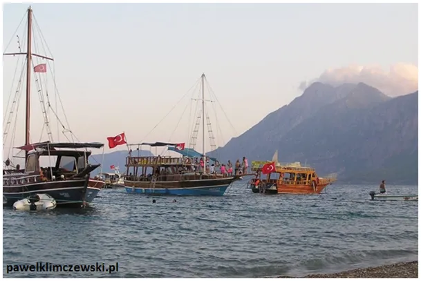
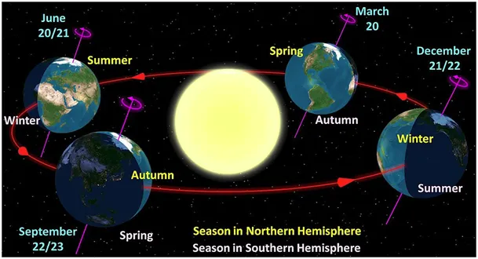
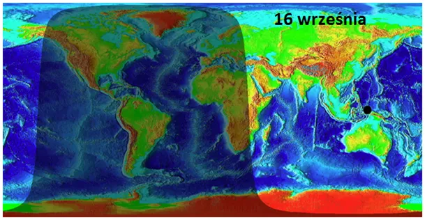
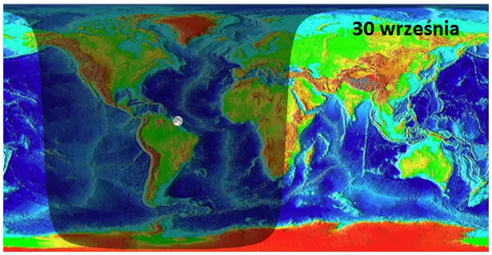
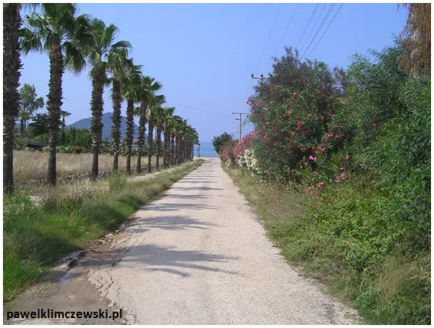
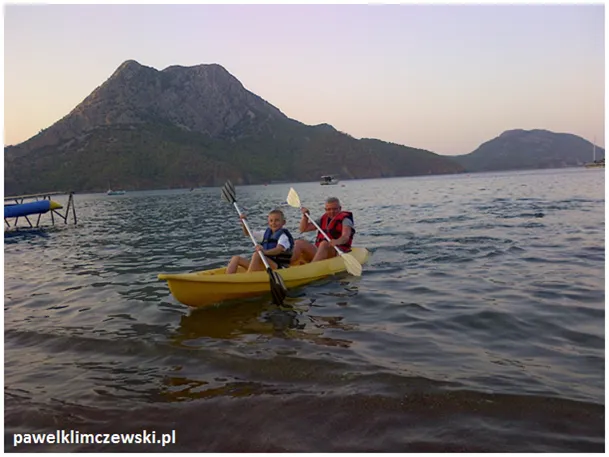
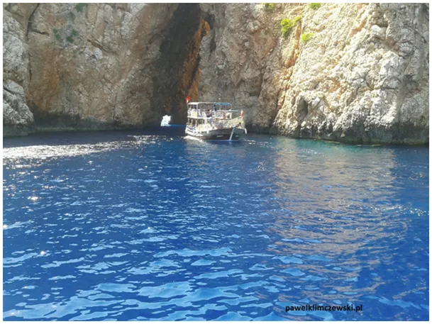
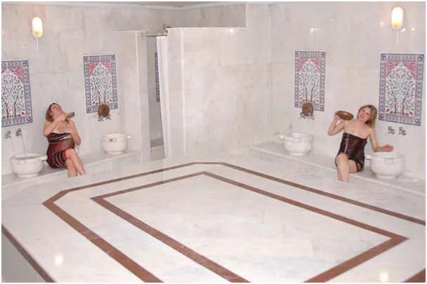
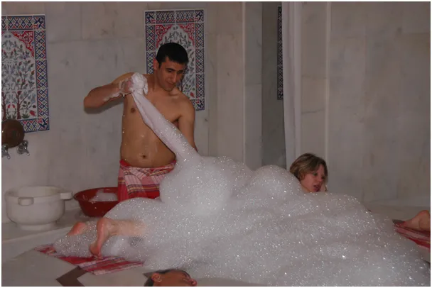

Turecka eskapada przed nami! Już tuż, tuż! Kosmiczna pogoda jest tuż za oknem.

Równo za tydzień Ziemia znajdzie się w takim punkcie, że obie półkule, północna i południowa będą równo oświetlone przez Słońce. Potem każdego dnia na biegunie północnym zapadać będzie noc polarna, do 22 czerwca 2024 tam nie będzie widać Słońca, za to na biegunie południowym przez pół roku będzie trwał polarny dzień.

Tym samym, miejsca położone na południe od Polski, będą miały dłuższy dzień odwrotnie niż latem. Dlatego latem warto na wakacje jeździć na północ, a jesienią i zimą na południe. Lipiec w Estonii to gwarancja ciepłych, jasnych nocy.


Po 23 września warto odpocząć gdzieś na południu. Morze Śródziemne będzie ciepłe do stycznia a wieczory będą tam dłuższe niż w Polsce. Ceny też są o wiele niższe, szczególnie w krajach nienależących do UE.

Turcy jesień nazywają "drugą wiosną", gdyż wiosna to "pierwsza wiosna", w Anatolii jesieni nie ma. Po "drugiej wiośnie", jest zima a potem znów "pierwsza wiosna" i lato. Wynika to z faktu, że po lecie, co kilka dni, czasem pada deszcz, trwa to kwadrans lub pół godziny. Wtedy zaczynają kwitnąć kwiaty i krzewy. Dzieci są już w szkole, a piękne plaże są puste i czekają tylko na nas.

W tle góra "Słoń Hannibala", trąba po lewej, Hannibal gdzieś poszedł ;).

Delikatne Słońce i ciepłe morze kusi, by spędzać czas na łódkach, w spokojnych zatokach pływanie kajakiem nie jest niczym trudnym. Można w ten sposób dopłynąć do niedostępnych plaż i jaskiń.
Turecka łaźnia, hamam, to ponad dwie godziny spędzone w saunie, na peeling i masażu.

To jeden z kluczowych elementów tureckiej kultury, higiena i dbałość o ciało jest tam obowiązkiem każdego. Jest to usługa powszechna i tańsza niż polski fryzjer, mimo, że trwa wielokrotnie dłużej.

Na moim szlaku są gorące źródła, przy których sielsko płynie czas w cieniu wielkiego eukaliptusa.
Ciepłe błotko dopełnia zabiegów z tureckiej łaźni. Turecka eskapada przed nami! Już tuż, tuż.
Zapraszam! pawel@pawelklimczewski.pl
Paweł Klimczewski